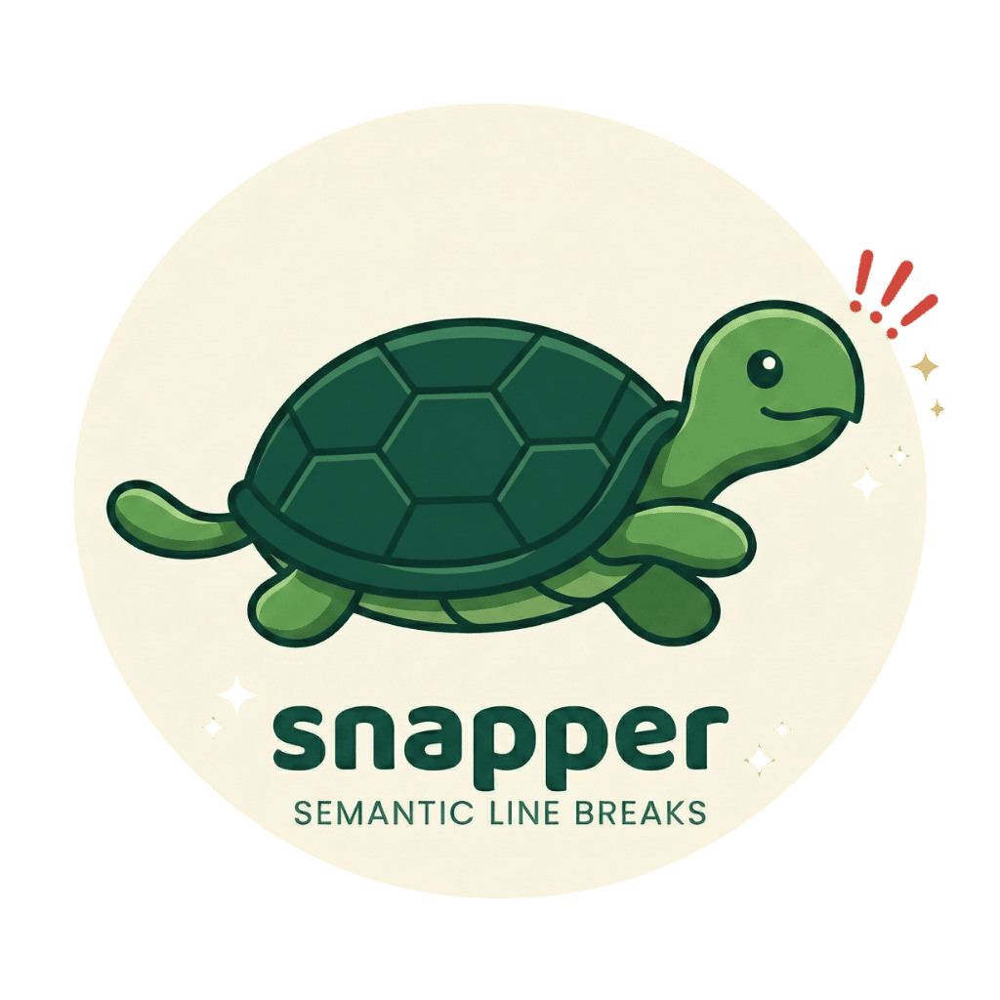

A fast, format-aware semantic line break formatter for academic papers and collaborative writing.
See it in action
Traditional wrapping hides changes in paragraph-wide diffs. Snapper breaks at sentence boundaries so every edit shows exactly what changed.
Features
Everything you need to adopt semantic line breaks across your paper writing toolchain.
Understands Org-mode, LaTeX, Markdown, and plaintext. Code blocks, math environments, tables, and drawers pass through untouched.
Handles Dr., Fig., Eq., e.g., i.e., et al. and 80+ more. Add project-specific abbreviations via .snapperrc.toml.
Ships with .pre-commit-hooks.yaml. Enforce semantic line breaks automatically on every commit across your team.
Stdin/stdout interface works with Emacs Apheleia, vim, and any editor that supports external formatters. Format on save.
Bundled vale rules flag lines with multiple sentences in your editor. Use --check for precise CI enforcement.
Auto-format on commit, transparent to collaborators. Add to .gitattributes and formatting happens silently.
Get started